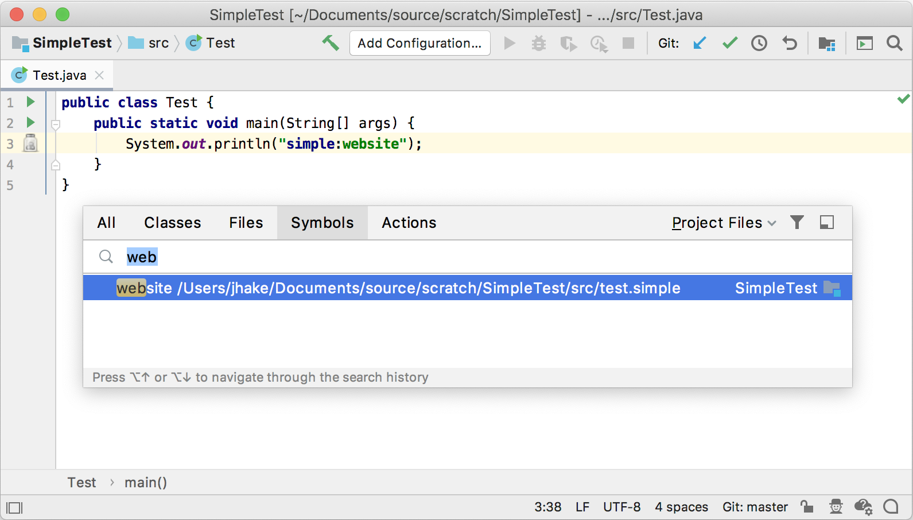

13. Go To Symbol Contributor
A Go to Symbol Contributor helps the user to navigate to any PSI element by its name.
- 13.1. Define a Helper Method for Generated PSI Elements
- 13.2. Update Grammar and Regenerate the Parser
- 13.3. Define a Go to Symbol Contributor
- 13.4. Register the Go To Symbol Contributor
- 13.5. Run the Project
13.1. Define a Helper Method for Generated PSI Elements
To specify how a PSI element looks like in the Go To Symbol popup window, Structure tool window, or other components, it should implement getPresentation().
This method gets defined in the utility class SimplePsiImplUtil, and the parser and PSI classes must be regenerated.
Add the following method to SimplePsiImplUtil:
public static ItemPresentation getPresentation(final SimpleProperty element) {
return new ItemPresentation() {
@Nullable
@Override
public String getPresentableText() {
return element.getKey();
}
@Nullable
@Override
public String getLocationString() {
return element.getContainingFile().getName();
}
@Nullable
@Override
public Icon getIcon(boolean unused) {
return SimpleIcons.FILE;
}
};
}
13.2. Update Grammar and Regenerate the Parser
Now add the SimplePsiImplUtil.getPresentation() to the property methods definition in the Simple.bnf grammar file by replacing the property definition with the lines below.
Don’t forget to regenerate the parser after updating the file!
Right-click on the Simple.bnf file and select Generate Parser Code.
property ::= (KEY? SEPARATOR VALUE?) | KEY {
mixin="org.intellij.sdk.language.psi.impl.SimpleNamedElementImpl"
implements="org.intellij.sdk.language.psi.SimpleNamedElement"
methods=[getKey getValue getName setName getNameIdentifier getPresentation]
}
13.3. Define a Go to Symbol Contributor
To enable the simple_language_plugin to contribute items to Navigate | Class…, File…, Symbol… lists, subclass ChooseByNameContributor to create SimpleChooseByNameContributor:
// Copyright 2000-2020 JetBrains s.r.o. and other contributors. Use of this source code is governed by the Apache 2.0 license that can be found in the LICENSE file.
package org.intellij.sdk.language;
import com.intellij.navigation.*;
import com.intellij.openapi.project.Project;
import org.intellij.sdk.language.psi.SimpleProperty;
import org.jetbrains.annotations.NotNull;
import java.util.*;
public class SimpleChooseByNameContributor implements ChooseByNameContributor {
@NotNull
@Override
public String[] getNames(Project project, boolean includeNonProjectItems) {
List<SimpleProperty> properties = SimpleUtil.findProperties(project);
List<String> names = new ArrayList<>(properties.size());
for (SimpleProperty property : properties) {
if (property.getKey() != null && property.getKey().length() > 0) {
names.add(property.getKey());
}
}
return names.toArray(new String[names.size()]);
}
@NotNull
@Override
public NavigationItem[] getItemsByName(String name, String pattern, Project project, boolean includeNonProjectItems) {
// TODO: include non project items
List<SimpleProperty> properties = SimpleUtil.findProperties(project, name);
return properties.toArray(new NavigationItem[properties.size()]);
}
}
13.4. Register the Go To Symbol Contributor
The SimpleChooseByNameContributor implementation is registered with the IntelliJ Platform in the plugin configuration file using the com.intellij.gotoSymbolContributor extension point.
<extensions defaultExtensionNs="com.intellij">
<gotoSymbolContributor
implementation="org.intellij.sdk.language.SimpleChooseByNameContributor"/>
</extensions>
13.5. Run the Project
Rebuild the project, and run simple_language_plugin in a Development Instance.
The IDE now supports navigating to a property definition by name pattern via Navigate | Symbol action.
